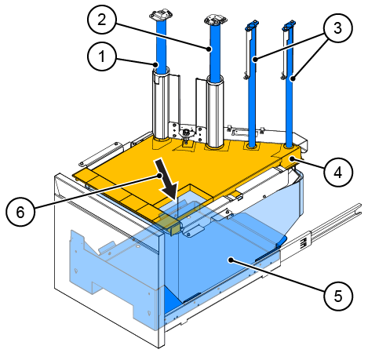
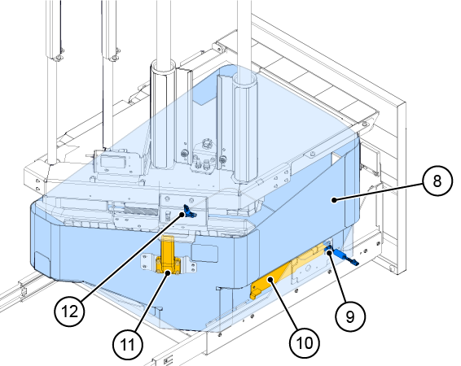
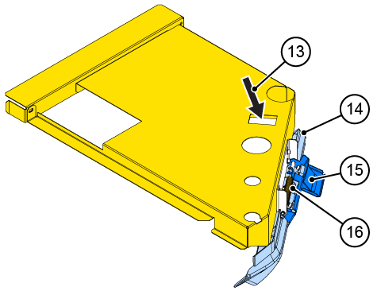

Operating Principles for the Solid Waste System
This topic includes information about the theory of operation, or operating principles, for the solid waste system.
| Table of Contents |
|---|
| Function |
| Location |
| Operational Overview |
| Component Locations and Functions |
| Component and Interaction Block Diagram |
| Interacting and Intersecting Devices |
Function
The solid waste system functions to collect used vessels, disposable tips, and reagent packs. The system also functions to collect fluids from the intermediate liquid waste overflow and from condensation tubes in the sample wheel, reagent storage, and pneumatics system.
Location
The solid waste bin is located in the lower middle cabinet on the front of the instrument. The vessel waste chutes are located throughout the center of the instrument and portrude up through the center chassis.

| 1 | Waste chutes |
| 2 | Waste bin |
Operational Overview
The solid waste system operation includes the following processes.
| Process | Description |
|---|---|
| Waste disposal |
|
| Waste bag change |
|
Component Locations and Functions
The following illustrations and tables describe component locations and functions.

| # | Component | Description and Function |
|---|---|---|
| 1 | Aliquot sample pipettor tip chute | Waste chute for disposable tips discarded from the aliquot sample pipettor. |
| 2 | Precision sample pipettor tip chute | Waste chute for disposable tips discarded from the precision sample pipettor. |
| 3 | Vessel chutes | Waste chutes (two) for discarding reaction vessels (RVs). Accessed by the sample and incubate pick-and-place (PnP) systems. |
| 4 | Temporary box | Temporary queue for discarded tips or vessels for when the waste drawer is open. |
| 5 | Drawer | Sliding drawer that houses the waste bin. |
| 6 | Falling position | The falling position for reagent packs and reagent storage condensation. |

| # | Component | Description and Function |
|---|---|---|
| 8 | Waste bin | Bin where the waste bag is placed to accept solid waste and condensation. |
| 9 | Waste bin sensor | Detects the presence of the waste bin. |
| 10 | Flag, Bin | Triggers the bin-present sensor. |
| 11 | Pin, Bin | Strikes the tray plate to open the temporary tray when the bin is present. |
| 12 | Tray Sensor | Detects whether the tray is open or closed. |

| # | Component | Description and Function |
|---|---|---|
| 13 | Falling position | The falling position for sample wheel condensation, liquid waste intermediate tank overflow, and air compressor condensation. |
| 14 | Temporary tray | Houses discarded waste when the bin has been removed. |
| 15 | Plate, tray | The location where the waste bin pin strikes to close the temporary tray. |
| 16 | Spring | Passively closes the temporary tray when the waste bin has been removed. |
Component and Interaction Block Diagram
For a detailed illustration of components and interactions, see the DxI9000 Solid Waste Block Diagram.
Interacting and Intersecting Devices
The solid waste system interacts with the following devices. (The waste type is indicated in parentheses.)
- Aliquot sample pipettor (disposable tips)
- Precision sample pipettor (disposable tips)
- Sample PnP (vessels)
- Incubator PnP (vessels)
- Reagent storage (reagent packs and condensate)
- Liquid waste (overflow from intermediate waste container)
- Sample wheel (condensate)
- Pneumatics (condensate)